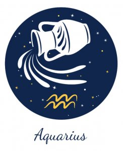

←
AQUARIUS AND AQUARIUS COMPATIBILITY-


Aquarius and Aquarius Nature and Nuances:
Communication :
Pros In An Aquarius-Aquarius Relationship:
The positive aspects of two Aquarians relationship is the easy flow of conversation because they understand each other so well. Moreover, since they are very intelligent people and they have lofty thoughts, the things they talk about are generally not understood even by people in their surroundings. Their intellectual connect is absolute and oblivious to everything around them.
Cons In An Aquarius-Aquarius Relationship:
However, the Aquarius native is really strong, and they have big egos. So in an Aquarius compatibility it is easy for ego issues to crop and spoil things. Their egos can really be the reason for a great deal of unpleasantness in their relationship leading to bitter conflicts between their personalities. The best remedy for such a situation is for both of them to relax, sit back and allow each other enough intellectual freedom that they want.
Love :
When things boil down to a romantic relationship, the two Aquarius natives can feel a lot of love for each other, but they are more likely to look upon each other as just good friends. That's why the Aquarius-Aquarius love match is not very emotional in a strict sense, but this does not imply that they are unemotional. Rather, their love is spread over a group of people. However, for the Aquarius man and Aquarius woman relationship, even though it may not be so romantic, for it to work out there has to be a strong foundation of love. The best part of their love equation is that though they deeply care for each other, there is no trace of possessiveness.
Compatibility:
The Aquarius zodiac natives are usually shy and reserved, but sometimes they can be very energetic. Either ways, they are intellectual people and they love to help others. They need intellectual motivation at all times. They have the rare ability to look at things objectively, which makes it easy for them to solve not only their problems but other peoples' problems also. The Aquarians can get infected by the energy in their surrounding, but at the same time they have an innate desire to sometimes stay aloof and away from everything so that they can unwind. They are also very far-sighted and can exactly visualize their goals and how to get there.
- The positive aspects of two Aquarians relationship is the easy flow of conversation because they understand each other so well. Moreover, since they are very intelligent people and they have lofty thoughts, the things they talk about are generally not understood even by people in their surroundings. Their intellectual connect is absolute and oblivious to everything around them.
- However, the Aquarius native is really strong, and they have big egos. So in an Aquarius compatibility it is easy for ego issues to crop and spoil things. Their egos can really be the reason for a great deal of unpleasantness in their relationship leading to bitter conflicts between their personalities. The best remedy for such a situation is for both of them to relax, sit back and allow each other enough intellectual freedom that they want.